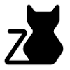

喵影
中
EN
快捷键：Space 播放/暂停 · ←/→ 快进快退 · ↑/↓ 音量 · N/P 切换视频 · F 收藏
⌨️
🎬
从右侧列表选择一个视频吧！
暂无视频播放
🤍
📜
视频列表
推荐视频
我的收藏
视频搜索
推荐视频列表
🔁
🔂
🔀
💾
📂
🔍
视频搜索
支持片名/演员/语言/地区/类型/年代
搜索
快捷键说明
Space：播放 / 暂停
← / →：快退 / 快进 5 秒
↑ / ↓：调高 / 调低音量
N / P：下一个 / 上一个视频
F：收藏 / 取消收藏当前视频
Esc：关闭本说明
关闭